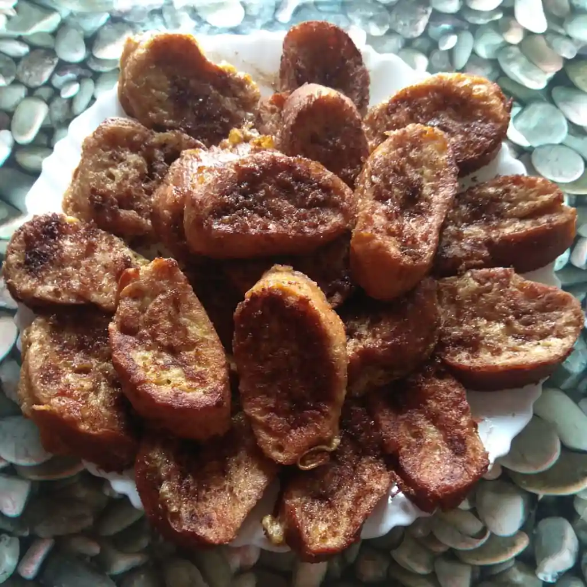

Torrijas

Torrijas are a spanish dessert traditionally eaten during the Holy Week (Easter). It is said they were first cooked using the leftovers from the Lent.
- ⏲️ Prep time: 1 min
- 🍳 Cook time: 5 min
Ingredients
- Dried bread (or Torrijas bread). Must be bread from a regular loaf, not from a tin loaf.
- Milk (to soak the bread, 2 cups per 16 torrijas approx.)
- Eggs (to coat the bread, 2 eggs per 16 torrijas approx.)
- Cinnamon
- Grated lemon rind (optional)
- Sugar
- Olive oil
Directions
- Mull the milk with cinnamon and a bit of sugar (not too much, the milk is already sweet). Add the lemon rind if you want.
- Cool down the milk.
- While the milk is cooling, beat the eggs and heat up half a pan of olive oil.
- Cut the dry bread in slices. Soak it in the milk.
- Coat the bread soaking it in the beaten eggs.
- Fry the soaked & coated bread with the heated oil.
- Optionally sprinkle some sugar onto the Torrijas.
- Enjoy when they are cooled down. Don’t eat too much, it won’t be easy resisting!
Contribution
- danoloan - webpage